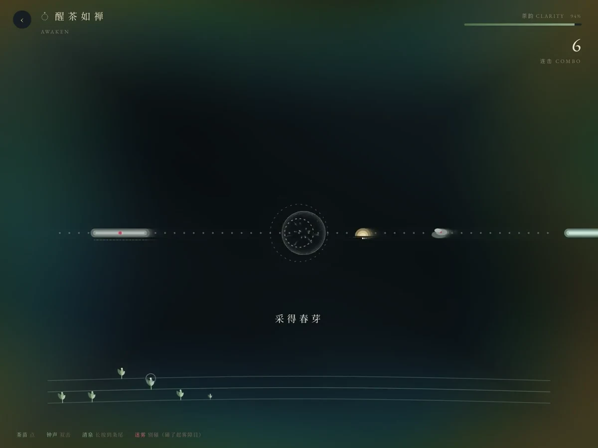
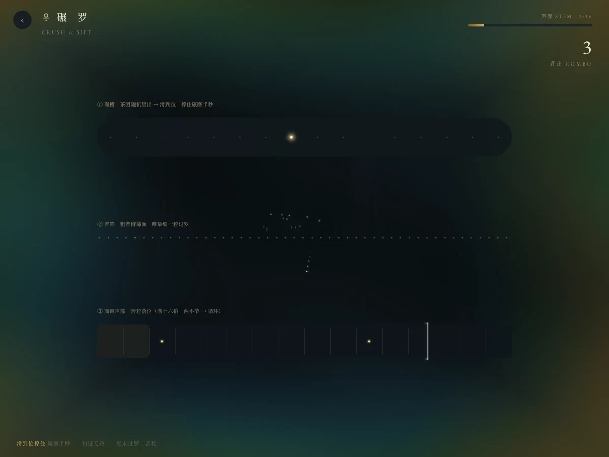
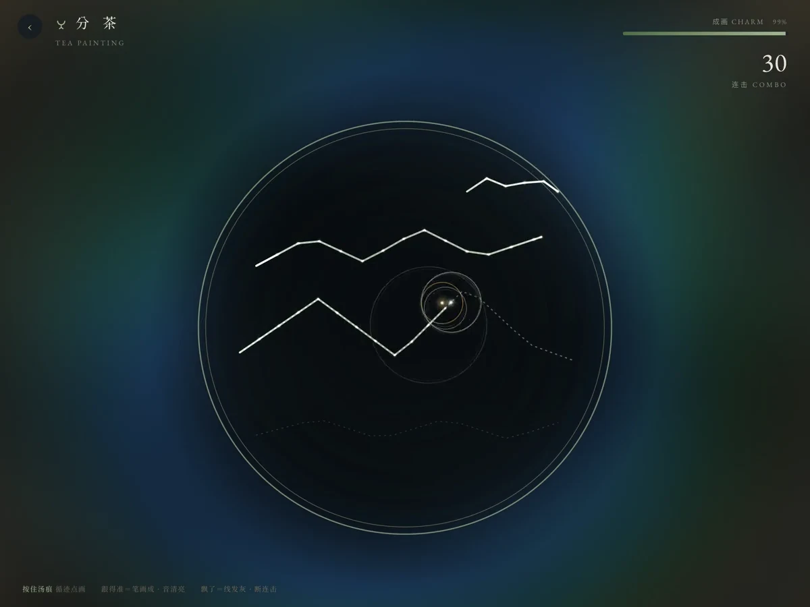
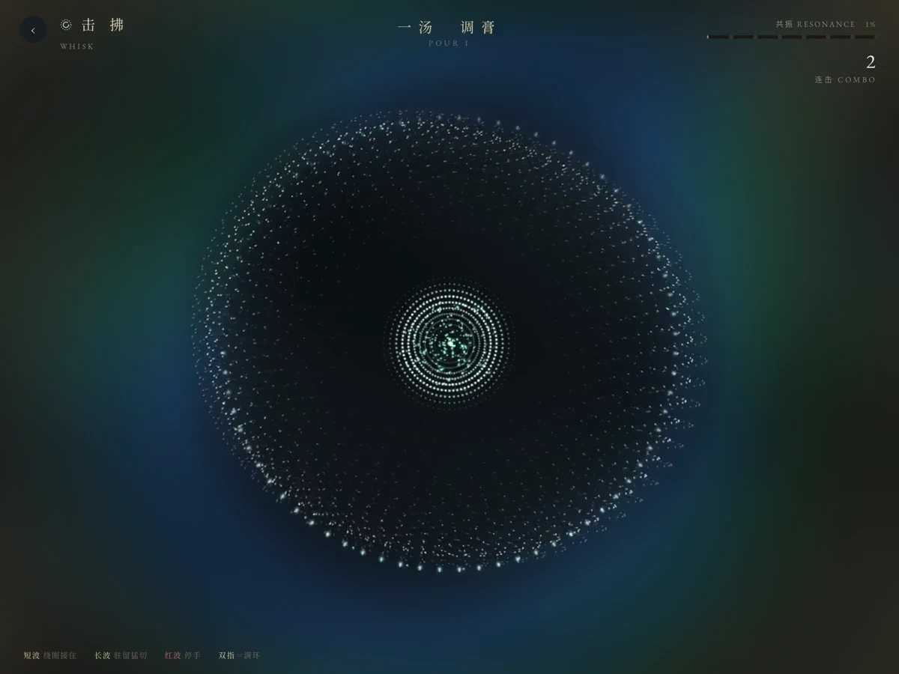

场景化陈列体验
借园林框景组织茶席，把茶礼、茶器与植物放入同一组陈列。
引导观众在行走、停留与互动中理解茶文化。
宋代茶百戏手作体验及音游数字化设计
以茶为弦，以器为谱。
让一场宋代茶事，成为可以亲身参与的游戏。
从径山寺的茶宴、点茶流程与器物出发。
从调研中的器物与动作，推演玩法、角色和界面。
玩法与结构
角色与器物
界面与粒子
从观展到动手点茶，把声音、器物与游戏放进同一场茶事。
沿展厅游览、在茶席驻留，再进入核心茶室完成击拂。展具与茶饮周边，把数字体验接回真实器物。
左右切换四段游戏，展开击拂中的动作、节奏与茶沫。




真实茶筅的运动进入游戏，同一动作同时推动点茶与屏幕反馈。
光轮给出节奏，手的转动点亮盏沿；画面与乐音回应身体，而真实的茶沫由击拂形成。
扫过的盏沿会短暂保留一圈青色粒子；它与抵达的短波相遇，完成一次接奏。
短波命中即消散，并迸出亮点、叠加清亮的音色。光轮既是提示，也是可被演奏的音符。
长波抵达后仍停留在盏沿，持续转动会在驻留窗口内多次切中；过早停手会减少切奏次数。
每次切中都累积连击、叠加亮音；切奏足够，最后以一圈粒子绽放回应。
已有的青色环会很快衰退；留出停顿，让红波安全经过，形成动与静的节奏。
不停手会误触红波，触发警示、断连击与共振回退。试着切换动作，对比画面反应。
白色粒子把茶汤的变化转成可见的进程：初搅聚拢，随后变白、增密、扩展，最后收束成纹。
原型随共振推进七个阶段，逐步增加波形密度、长波与红波比例，并叠加编曲层次。
以每分钟 80 拍安排光轮抵达的时刻；底层乐句持续铺陈，接准时叠加亮音，长波由连续切奏发声。
七汤逐步叠加鼓点、低音与拨弦，并增加半拍光轮。手在同一拍速下选择接奏、持续与停顿，形成疏密变化。
击拂 · 原游戏渲染 · 定向机制演示 · 自动操作
点、双击、按住，把茶声采集成声场。
移到茶团上停留半秒，把茶末收进十六个音格。
跟随发光汤痕描摹，让手势连成山水与旋律。
茶粉铺开，初始光轮疏缓。
茶粉聚拢起白，鼓点开始进入。
细沫渐生，拨弦与半拍光轮加入。
白沫扩展，短波、长波与停顿交错。
粒子增密泛白，节奏层次继续加深。
茶沫更厚，鼓点和加拍更加密集。
茶沫趋于饱满，以粒子茶纹收束。
手在点茶，屏幕回应击拂的节奏。把屏幕里的动作，带回真实的一盏茶。
柄端可拆卸套筒
陀螺仪 · 主控 · USB
绕圈频率 · 粒子 · 节奏
我用转动强度来控制绕圈频率：动作越急，屏幕击拂越快；停手后，反馈逐渐回落。
模块收在柄端套筒内，与真实茶筅一起运动。现有固件输出 USB 串口数据，经电脑转发后可送入游戏。
结构与动作映射示意，依据现有固件与游戏输入接口绘制。滑杆模拟动作强度，实体联动过程需另行录制。
空间设计效果与交互流程
左右滑动查看空间分析
流动
茶盏与茶席
秩序
稳定与承托
层次
光影与节奏
递进
视线与层次
范围
围合与停留
对话
人与自然
香器／茶壶
高低错落，引导观看与停留。
茶花／插花
留出空白，承托自然意向。
圆扇／书画
映照光影，形成诗意景面。
茶书／器物
层级递进，组织器物与阅读。
茶壶／茶礼
凸显中心，营造仪式感。
茶杯／建盏
借景入席，一架一境。
借园林框景组织茶席，把茶礼、茶器与植物放入同一组陈列。
引导观众在行走、停留与互动中理解茶文化。
把游戏奖励，带回日常的一杯茶。
奖励器物与茶先生投影共同回到茶席，延续绘茶与品饮的体验。
空间设计效果图茶弦记现场记录 · 共 5 张照片。